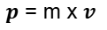
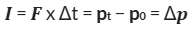
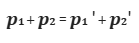
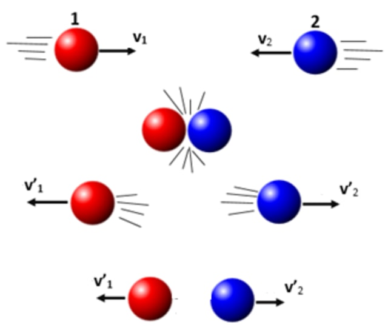
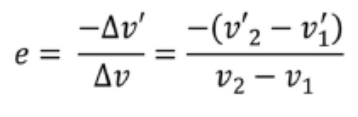

Web Pelajaran
Impuls dan Momentum
- Rumus Momentum dan Impuls
- Rumus Momentum

- Momentum dalam fisika adalah ukuran kesukaran untuk memberhentikan gerak suatu benda. m adalah massa dan v adalah kecepatan benda.
- Rumus Impuls

- Gaya yang bekerja pada benda dalam interval waktu tertentu disebut impuls (I). Impuls yang terjadi pada benda dapat menambah, mengurangi, dan atau mengubah arah momentum benda. p adalah momentum, F adalah gaya, Δt adalah waktu saat bekerjanya gaya.
- Hukum Kekekalan Momentum
- rumus hukum kekekalan momentum

- p1 dan p2 adalah momentum kedua benda sebelum tumbukan dan p1' dan p2' adalah momentum kedua benda setelah tumbukan. Definisi rumus tersebut adalah "Jika tidak ada gaya luar yang bekerja pada benda, maka jumlah momentum sebelum tumbukan (𝜮pi) sama dengan jumlah momentum setelah tumbukan (𝜮pf)"
- Ilustrasi hukum kekekalan momentum dalam tumbukan:

- Tumbukan
- Terdapat 3 jenis tumbukan: Tumbukan Lenting sempurna yaitu ketika koefisien restitusi sama dengan 1(e=1), Tumbukan Lenting sebagian yaitu ketika koefisien restitusi berada di antara 0 dan 1, dan tumbukan Tidak lenting dimana setelah tumbukan kedua benda menempel (v1'=v2') dan koefisien restitusi sama dengan 0(e=0) .
- Nilai koefisien restitusi atau juga koefisien tumbukan bisa dicari dengan rumus:

Iklan